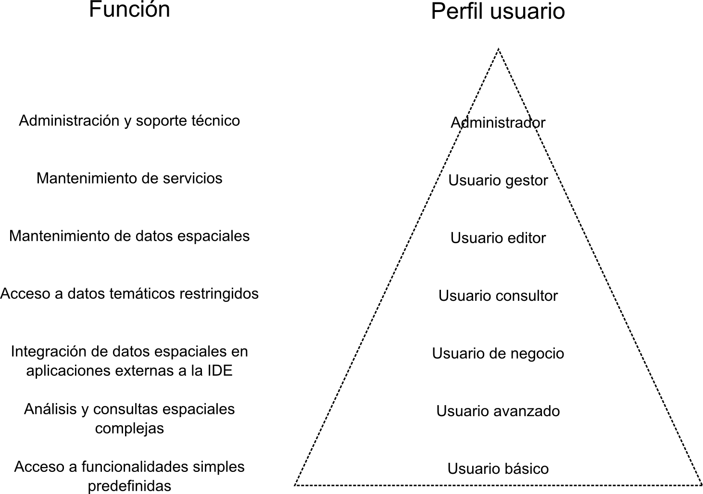
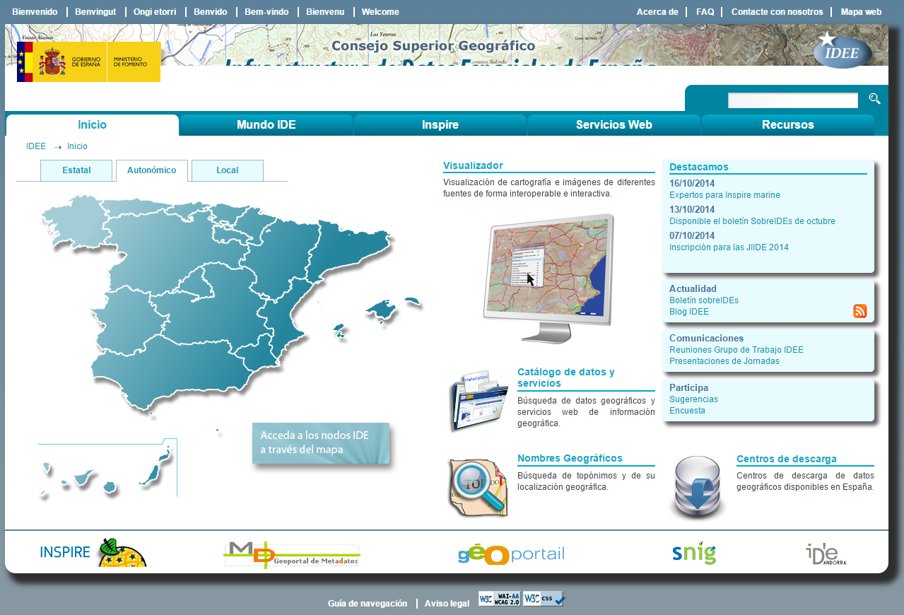
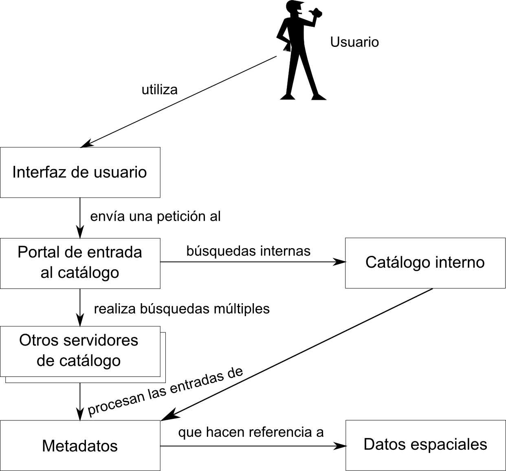
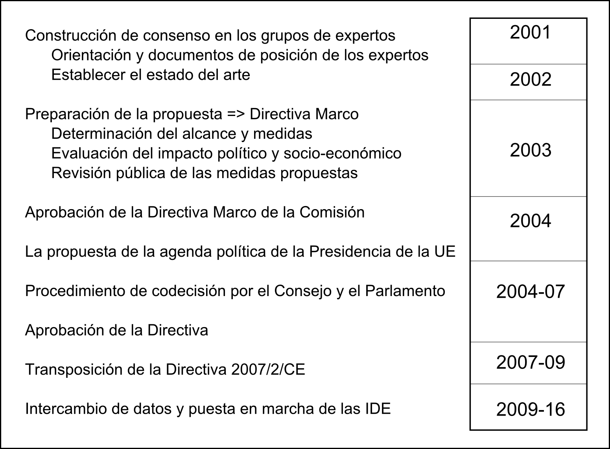
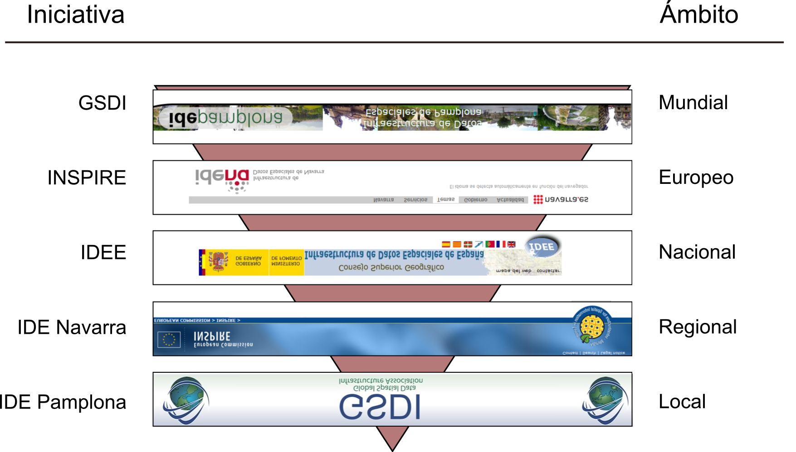

Las Infraestructuras de Datos Espaciales (IDE) son en la actualidad el elemento básico para el aprovechamiento de la información geográfica a nivel global. Desde su aparición, han supuesto un cambio conceptual en el ámbito SIG, y su importancia en el contexto actual es innegable.
En este capítulo se desarrollan las principales características de una IDE, sus elementos, su historia y los aspectos que se tienen en cuenta para establecer con éxito una de ellas.
Introducción
Alrededor de un SIG se movilizan elementos técnicos a varios niveles, y confluyen diferentes equipos de trabajo. Así, además de los aspectos técnicos, es importante plantearse los aspectos organizativos, funcionales y humanos. Si plantearse estos aspectos es importante dentro de una misma organización, se convierte en algo fundamental cuando confluyen múltiples organizaciones a varios niveles.
Si observamos las diferentes comunidades de usuarios de SIG, observaremos que, si todas esas comunidades se coordinan y encuentran elementos comunes en que apoyarse, pueden surgir abundantes intereses comunes que beneficien a todas ellas, evitando la duplicidad de tareas. Así pues, cada vez es más habitual que en los proyectos SIG no sólo esté implicada una organización, sino que se trabaje de forma distribuida y colaborativa entre varias.
A este hecho hay que sumar que uno de los principales productores de información geográfica son los organismos públicos, desde el nivel nacional hasta el regional, y que esos datos van a ser utilizados por múltiples organizaciones y gran cantidad de usuarios de SIG.
Las pautas organizativas que se definirían dentro de una organización deben traducirse a este nivel superior en políticas y normativas que establezcan un contexto general adecuado. En este, todos los actores implicados en el trabajo con información geográfica, desde su creación hasta su uso final, pueden coordinarse y beneficiarse del trabajo mutuo, así como, especialmente, del desarrollado por las administraciones en su faceta de productores de datos geográficos.
Sin una coordinación así, el aprovechamiento de los SIG y de la información geográfica no sería todo lo completo que cabría desear. El número de proyectos que no se desarrollan o que salen adelante en condiciones no óptimas por falta de datos es elevado. Sin embargo, el problema subyacente no es siempre la falta en sí de datos, sino muchas veces la imposibilidad de obtener esos datos o, incluso, de saber que estos existen. Es decir, que el problema no es habitualmente de tipo técnico, sino de tipo organizativo, político y social.
Es en esta situación de escasa coordinación donde surgen las Infraestructuras de Datos Espaciales para dar respuesta a las necesidades de organización global en lo referente a la información geográfica, y en la que se han desarrollado progresivamente hasta nuestros días.
La aparición de las IDE
Que la información geográfica es de gran importancia para proyectos de todo tipo es algo de sobra conocido. No obstante, el reconocimiento de esa importancia y de la necesidad de una correcta gestión de dicha información para poder solucionar problemas de diversa índole no aparece como tal hasta fechas recientes. Una de tales fechas, la cual puede citarse como momento decisorio en el desarrollo de las IDE, es la conferencia de las Naciones Unidas sobre medio ambiente y desarrollo que tuvo lugar en en Río de Janeiro en 1992. Entre los muchos temas a debate en esta reunión, uno de especial relevancia fue el papel de la información geográfica para tratar los problemas acerca de los cuales se debatía (protección medioambiental, cooperación internacional, desarrollo, etc.). Quedó claro en aquel momento que establecer mecanismos para afrontar esos problemas pasaba necesariamente por instaurar de forma paralela mecanismos que permitieran aprovechar mejor la información geográfica y lograr una mayor coordinación entre las organizaciones estatales encargadas de su manejo. En otras palabras, en una reunión de naciones que buscaban coordinarse para solucionar asuntos medioambientales, estas concluyeron unánimemente que un aspecto crítico era coordinarse en lo referente a información geográfica, pues esta era una herramienta básica para el desarrollo de cualquier actividad en ese ámbito. Y además, que esta coordinación debía extenderse dentro de cada país descendiendo desde el nivel estatal hasta el nivel más bajo en que se produzca información geográfica.
En el Programa 21, promulgado en esa conferencia, se incluyen los dos siguientes principios:
Principio 4: A fin de alcanzar el desarrollo sostenible, la protección del medio ambiente deberá constituir parte integrante del proceso de desarrollo y no podrá considerarse en forma aislada.
Principio 10: El mejor modo de tratar las cuestiones ambientales es con la participación de todos los ciudadanos interesados. Toda persona deberá tener acceso adecuado a la información sobre el medio ambiente de que dispongan las autoridades publicas.
Entre esa información a la que los ciudadanos deben tener un acceso adecuado se encuentra, en lugar preponderante, la información geográfica, básica como ya sabemos para la realización de cualquier estudio o análisis del medio.
Como respuesta a la redacción de estos principios, comienzan a surgir las primeras iniciativas de carácter nacional encaminadas a lograr los objetivos anteriores. Previamente a este momento, una coordinación así era algo por completo inexistente. Cada organización, ya fuera una agencia estatal o una empresa, producía la información que pudiera necesitar y no buscaba favorecer la difusión de esta. Como consecuencia de ello, se perdía la oportunidad de aprovechar el esfuerzo realizado, y cualquier otro trabajo que pudiera beneficiarse de esa información geográfica debía desarrollarse sin ella, o bien realizando un nuevo esfuerzo de creación, con el consecuente gasto económico. En resumen, una situación en absoluto óptima.
El hecho de que la situación relativa a la información geográfica no era idónea era ya conocido. Aunque no existieran iniciativas formales para atajar el problema, este estaba ya plenamente identificado. En 1987, el comité Chorley, del Departamento de Medioambiente de Estados Unidos, concluyó que «las barreras políticas e institucionales que restringen actualmente el uso de los SIG deben ser superadas. Esto incluye problemas de incompatibilidad por diferencias de definición y formatos, así como restricciones al acceso y adquisición de los propios datos.»
En particular, se identifican los siguientes puntos problemáticos:
Calidades muy diferentes y sin especificar.
Disparidad de escalas y formas de representación.
Políticas de precios que suponen, en la práctica, hacer inaccesibles los datos espaciales.
Un mercado sin regular: distintos proveedores con productos similares,
Falta de estándares de intercambio. Cada proveedor suministra la información en el formato de archivo de su programa (propietario).
Desde el momento en que se establece como crucial el papel de la información geográfica, comienzan a desarrollarse elementos, tanto técnicos como políticos y administrativos, cuyo objetivo principal es disminuir o eliminar la presencia de situaciones similares a la anterior, haciendo que la información geográfica esté disponible de forma sencilla para todos los usuarios que puedan necesitarla, y favoreciendo así su aprovechamiento en la mayor medida posible. Estos elementos en su conjunto forman lo que desde entonces se ha dado en llamar Infraestructura de Datos Espaciales, y que paulatinamente los distintos organismos públicos han ido instaurando en sus territorios hasta el día de hoy.
El desarrollo de iniciativas de este tipo es una constante desde ese momento, conformándose así de forma progresiva el panorama actual de la producción y uso de información geográfica. Veremos algunas de esas iniciativas con más detalle en este y en el próximo capítulo.
¿Qué es una IDE?
Podemos definir una IDE como un conjunto de datos espaciales, tecnología, normas y planes institucionales, todos ellos encaminados a facilitar la disponibilidad y el acceso a dichos datos espaciales.
A diferencia de los planteamientos anteriores a la aparición de las IDE, en los que se consideraba a los datos como elementos independientes que podían jugar su papel en el entorno SIG sin necesidad de establecer políticas o acuerdos referidos a ellos, el desarrollo de las IDE trae consigo un nuevo planteamiento en el que los datos necesitan elementos adicionales para ser verdaderamente productivos. Una Infraestructura de Datos Espaciales es, por tanto, mucho más que datos. Como indica [RecetarioIDE], una IDE incluye, además de los datos y atributos geográficos, documentación suficiente (los denominados metadatos), un medio para descubrir, visualizar y valorar los datos (catálogos y cartografía en red) y algún
método para proporcionar acceso a los datos geográficos (generalmente, Internet es el medio principal). Además, debe haber servicios adicionales o software para permitir aplicaciones de los datos. Por último, para hacer funcional una IDE, también debe incluir los acuerdos organizativos necesarios para coordinarla y administrarla a escala regional, nacional y transnacional.
Los conceptos básicos que podemos extraer de esta definición son los siguientes:
Información contenida. Una IDE es más que un conjunto de datos espaciales que se ofrecen para ser utilizados por más usuarios que los concebidos originalmente. Una IDE debe contener también servicios para descubrir qué datos hay disponibles (servicio de catálogo), servicios para acceder a la información geográfica y a la cartografía, y finalmente metadatos que describan los conjuntos de datos y los servicios disponibles.
Utilización de estándares. Los servicios y tecnologías utilizados en una IDE deben basarse en estándares aceptados internacionalmente para permitir la interoperabilidad a nivel técnico entre los sistemas de la IDE.
Establecimiento de acuerdos. El aspecto más importante de la IDE es el establecimiento de acuerdos entre los actores para la utilización de tecnologías y servicios compatibles y para la unificación de los modelos de datos de cada nivel de la IDE, de forma que se permita la combinación de los conjuntos de datos espaciales y la interacción de los servicios sin intervención manual repetitiva, obteniéndose un resultado coherente. Estos acuerdos también disminuyen los costes que conlleva la integración de la información proveniente de diversas fuentes, y eliminan la necesidad del desarrollo paralelo de instrumentos para el descubrimiento, intercambio y explotación de datos espaciales.
Por ejemplo, y como veremos con detalle más adelante, INSPIRE [INSPIRE] es la directiva europea que se ha establecido como marco de políticas, disposiciones institucionales, tecnologías, datos y personal de todas las IDE en la Unión Europea. INSPIRE dicta una serie de normas que son de obligado cumplimiento para las IDE europeas, pudiendo cada país miembro establecer normas más restrictivas para su ámbito siempre que no entren en conflicto con INSPIRE.
Estructura de una IDE. Niveles.
Las IDE surgen para coordinar la producción cartográfica a nivel global y su uso por todo tipo de usuarios. No obstante, no resulta práctico ni organizativamente viable gestionar tal cantidad de trabajo e información a un único nivel, siendo necesario delegar en distintos niveles y establecer una estructura organizativa para distribuir las responsabilidades y tareas. Esto da lugar a una estructura en forma de red en la que se distinguen una serie de nodos interconectados, cada uno de los cuales lo administra un determinado organismo responsable. Las relaciones existentes dependerán de la posición y nivel del nodo en cuestión, así como el tipo de organismo responsable de este.
En primer lugar, se puede clasificar un nodo IDE en función de la posición en la jerarquía administrativa que ocupe el organismo responsable del nodo. Esto divide los nodos en niveles que van desde desde la IDE global en el nivel superior hasta las IDE locales y las IDE corporativas en el nivel inferior.
Las responsabilidades en cada nivel difieren de forma notable, especialmente en lo que respecta al detalle de la información geográfica. A medida que descendemos en la jerarquía, el nivel de detalle aumenta, al mismo tiempo que el área geográfica gestionada por el nodo disminuye. La escala a la que se recoge la información varía para hacer más eficaz el manejo de la información, de tal modo que los nodos superiores delegan en los inferiores la obtención de información geográfica a una escala de mayor detalle que la establecida como límite para ellos. Se trata de que cada nodo opere en una escala adecuada para la extensión de territorio que gestiona.
A modo de ejemplo, la IDE de España cubre todo el territorio de España pero no puede recoger la información a una escala más detallada que 1:25000. La IDE de Galicia (una comunidad autónoma de España) cubre un territorio menor pero puede recoger la información a una escala de 1:5000. Finalmente, la IDE de un municipio de Galicia cubre un territorio mucho más pequeño pero puede recoger la información con mucho más detalle.
Entre los nodos de la IDE existen dos tipos de relaciones: las relaciones verticales y las relaciones horizontales. Las relaciones horizontales son las que se producen entre nodos de la IDE del mismo nivel. Un ejemplo claro de este tipo de relación es la que se produce para compartir información fronteriza de manera que sea continua y coherente. Por otra parte, las relaciones verticales son las que se producen entre nodos de la IDE de distinto nivel. Un ejemplo de este tipo de relación es el caso en el que un nodo de nivel superior consulta un nodo de nivel inferior para responder a una consulta que no puede responder con su propia información, o cuando un nodo de nivel superior recopila información de los nodos inferiores para agregarla y generar nueva información. Otro ejemplo de este tipo de relación ocurre cuando un nodo de nivel superior impone requisitos a los nodos inferiores para hacer que su información o su modo de funcionamiento sea coherente.
Componentes de una IDE
Pueden distinguirse los siguientes componentes en una IDE:
Datos. Antes de la aparición de las IDE, los datos se encontraban dispersos y fragmentados en distintas administraciones y/o empresas. Esto provocaba dos problemas: por un lado se duplicaban esfuerzos en la captura y mantenimiento de la información geográfica, y por otro lado era complicado encontrar cartografía apropiada para un trabajo porque había que solicitarla a distintos organismos siguiendo distintos trámites burocráticos y debía comprobarse que la información obtenida fuera coherente.
Las IDE evitan estos problemas mediante la aplicación de dos técnicas. En primer lugar, se obliga a capturar y mantener la información geográfica una única vez allí donde puede hacerse de modo más efectivo. De esta forma, la cartografía que se esté utilizando será siempre la mejor para cada caso y el coste de captura y mantenimiento se minimizará. En segundo lugar, las IDE obligan a compartir la información geográfica mediante servicios de datos basados en estándares (ver punto siguiente), lo que permite que el acceso a la información se pueda hacer de forma interoperable utilizando herramientas informáticas de análisis y visualización.
Otro pilar fundamental de las IDE son los metadatos, que describen a los propios datos espaciales y nos aportan información adicional acerca de ellos. Resultan imprescindibles para conocer siempre qué cartografía estamos usando, y son el único medio del que se dispondrá para poder seleccionar qué cartografía se ajusta mejor a nuestro caso de uso. Los metadatos se describen en el capítulo Metadatos.
Estándares. Es indispensable para el buen funcionamiento de una IDE que sea interoperable tanto a nivel técnico como a nivel semántico. La interoperabilidad a nivel técnico consiste que los participantes en el proceso de comunicación utilicen los mismos lenguajes, lo que implica llegar a acuerdos para la utilización de los mismos formatos y servicios de datos basados en estándares aceptados internacionalmente. La interoperabilidad a nivel semántico consiste en que la información compartida sea coherente en cuanto a significado, lo que implica que los organismos lleguen a acuerdos en cuanto a modelos conceptuales de esa información. En el capítulo Estandares, veremos qué organizaciones internacionales son las encargadas de dictar los estándares requeridos para el intercambio de información geográfica, así como las principales especificaciones que ya están en uso y disponibles para su utilización.
Políticas. El apoyo político es fundamental para el correcto desarrollo de las IDE, ya que el mayor esfuerzo de captura y mantenimiento de información geográfica se realiza en el sector público. Por ello, las políticas que el sector público determine con respecto a su mantenimiento, recolección y uso son las que mayor impacto tienen sobre la IDE. No se puede, no obstante, olvidar al sector privado, ya que es uno de los más interesados en el uso de la información proporcionada por una IDE.
Redes accesibles. Un sistema de información que ignore la gran importancia de Internet hoy en día está condenado al fracaso. En el campo de las IDE es necesario que existan redes accesibles para los usuarios y que estas redes soporten el tráfico producido cuando un usuario realiza una petición a un servidor y este le responde con la información geográfica solicitada. La red es el medio en el que la IDE se desarrolla, y gracias al cual puede ser efectiva.
Herramientas de consulta y descubrimiento de datos. Como ya hemos mencionado, los problemas que pueden aparecer en relación con los datos pueden deberse a una carencia de estos o al hecho de no estar disponibles, pero también a la dificultad de encontrarlos y de ser consciente de que esos datos existen en algún lugar. Si Internet es el medio para difundir la información geográfica, nos encontramos ante el mismo problema que con otros tipos de información: encontrar lo que buscamos en la enorme colección de datos que existen. Encontrar una página Web en Internet sin la ayuda de alguno de los buscadores que habitualmente empleamos es una tarea prácticamente imposible. Del mismo modo, cuando un organismo publica sus datos debe proveer medios para navegar en esos datos y buscar aquel que deseamos obtener. Estos medios conforman lo que se conoce como catálogos. Veremos en una sección posterior dentro de este capítulo algunas ideas más detalladas acerca de ellos.
Usuarios. Uno de los principales pilares dentro de una IDE son los usuarios, ya que solo si una IDE cubre sus necesidades, estos aceptarán esta nueva forma de trabajar y las IDE se mantendrán y evolucionarán. Por lo tanto, es importante conocer quiénes son los usuarios potenciales de cada una de las IDE y las necesidades que van a tener para poder definir los roles e identificar y evitar conflictos de interés entre usuarios. Esto permitirá conseguir el máximo nivel de satisfacción de los usuarios de la IDE.
Es fácil identificar en los puntos anterior una buena parte de los elementos que mencionamos en el capítulo dedicado a la implementación de un SIG, ya que, en buena parte, el establecimiento de una IDE y la implantación de un SIG comparten aspectos comunes.
Actores de una IDE
Los actores involucrados en el funcionamiento de una IDE son varios. En primer lugar se encuentran los usuarios de la IDE que son los que van a determinar su éxito o su fracaso. Dentro de los usuarios podemos considerar distintos tipos: administraciones públicas que necesitan la información para realizar sus tareas (por ejemplo las áreas de urbanismo de los municipios, o los organismos de gestión de las cuencas hidrográficas), empresas que pueden usar la información para sus negocios (por ejemplo empresas de elaboración de planes urbanísticos), universidades y centros de investigación, o personas individuales. Todos estos tipos de usuarios deben estar contemplados en la IDE ya que el éxito de la misma radica en cubrir las necesidades del mayor número posible de usuarios.
De forma más detallada, [Rodriguez2005JIDEE] divide los usuarios según su perfil en los siguientes:
Usuario básico. Utiliza las herramientas básicas tales como un visor Web.
Usuario avanzado. Utiliza herramientas y aplicaciones específicas no disponibles para el público general, ya sea a través de la Web o como aplicaciones locales.
Usuario de negocio. Accede a los datos de la IDE desde aplicaciones externas, para combinarlo con otros fuera de la IDE y realizar algún tipo de negocio en base al conjunto.
Usuario consultor. Está autorizado a acceder a datos restringidos de una temática específica.
Usuario editor. Encargado de mantener un subconjunto de datos existentes en la IDE.
Usuario gestor. Gestiona determinados servicios proporcionados por la IDE, por ejemplo un servicio de mapas temáticos concreto.
Administradores. El responsable final de mantener la infraestructura y dar soporte técnico a los restantes usuarios.
A medida que descendemos en esta clasificación, aumenta la especialización al tiempo que disminuye el número de usuarios que pertenecen a cada una de las clases definidas, tal y como se recoge esquemáticamente en la figura \ref{Fig:UsuariosIDE}

Clasificación de usuarios de una IDE (según [Rodriguez2005JIDEE])
$$\label{Fig:UsuariosIDE}$$
Además de los usuarios, otros actores involucrado en una IDE son los organismos internacionales de creación de estándares, en concreto la organización de estandarización internacional ISO con sus miembros nacionales, el Open Geospatial Consortium (OGC) y el World Wide Web Consortium (W3C). Estos organismos definen las normas y estándares que formarán la base tecnológica de la IDE y que permitirán su interoperabilidad.
Junto a los anteriores, encontramos al responsable particular de cada nodo IDE. Este responsable puede ser una administración pública, una empresa, una universidad, un centro tecnológico u otro tipo de organismo que se hace responsable de la administración del nodo IDE y de establecer los estándares que se deben cumplir dentro de su ámbito, así como normas o recomendaciones adicionales. A modo de ejemplo, para la IDE de España el responsable es el Instituto Geográfico Nacional, para la IDE de Galicia el responsable es el Sistema de Información Territorial de Galicia y para la IDE de la provincia de A Coruña el responsable es la Diputación de A Coruña.
De entre todos los responsables que podemos encontrar en el conjunto de nodos de una IDE, las Agencias Cartográficas Nacionales resultan especialmente relevantes, por las siguientes razones [Kok2009]:
Son responsables de los registros cartográficos en el dominio público y desempeñan un papel fundamental en el desarrollo de las IDE.
Son las instituciones que deben impulsar la puesta en marcha de estándares y establecer las bases que permitan el intercambio de información y la creación de geoportales, así como de los acuerdos jurídicos e institucionales relacionados con las IDE. Ponen en marcha plataformas de carácter público junto con otros colaboradores de las IDE para estimular la implementación de las IDE en los programas y procesos nacionales y de gobierno.
Establecen los acuerdos institucionales para la regulación de las IDE y juegan un papel de liderazgo en la toma de decisiones al nivel del gobierno central.
Juegan un papel importantísimo enlazando la comunidad profesional con los responsables políticos.
Finalmente, consideramos también como actores al resto de nodos de la IDE, ya que se debe alcanzar la coherencia de la información evitando la duplicidad de esfuerzos.
Algo más sobre catálogos
Los catálogos son la parte visible de la IDE, ya que proporcionan la puerta de entrada a los datos de esta y están pensados para simplificar la labor de encontrar y obtener los datos necesarios para cada usuario. Otros elementos de las IDE como metadatos o estándares son tratados en capítulos independientes dentro de esta parte del libro. Sin llegar a requerir un capítulo específico, los catálogos no obstante son piezas imprescindibles sobre las que es necesario profundizar, por lo que en este apartado describiremos con algo más de profundidad su papel y sus características como partes clave de una IDE.
El catálogo permite al usuario navegar de forma eficaz por la información contenida en una IDE, bien sea en uno de sus nodos de forma aislada o bien en el conjunto de la red de nodos que forman la IDE. Los nodos, como ya sabemos, deben estar conectados y relacionados, y es en virtud de esa conexión y gracias al uso de lenguajes comunes (estándares) que pueden comunicarse y compartir su información. De este modo, un catálogo puede ofrecer los datos contenidos en el nodo en el que se encuentra, pero también «preguntar» a otros nodos y devolver al usuario una respuesta que tenga también en cuenta los datos de esos otros nodos. Como vimos en el capítulo Servidores_y_clientes_remotos, esa respuesta a consultas es uno de los servicios que pueden ofrecerse basados en información geográfica.
El catálogo dispone de una interfaz, que es la que el usuario emplea para plantear sus búsquedas y obtener respuestas. Esta interfaz se localiza normalmente en el portal de acceso al catálogo, y proveen el acceso más directo a los contenidos de la IDE. Estos contenidos no se limitan exclusivamente a los datos, ya que pueden incluir servicios de distintos tipos (recordemos que, según vimos en el capítulo Servidores_y_clientes_remotos, lo datos pueden servirse de varias formas), incluyendo servicios que no se basen directamente en los datos de la IDE, tales como procesos.
En la figura \ref{Fig:Catalogo_UNEX} puede verse un ejemplo de una interfaz de acceso a un catálogo.

Interfaz de acceso al catalogo de la IDEE
$$\label{Fig:Catalogo_UNEX}$$
Cuando nos referimos a un usuario del catálogo, este no ha de ser necesariamente una persona, y no ha de «ver» la interfaz dispuesta para el acceso. El catálogo puede ser consultado por, por ejemplo, otro ordenador, ya que expone sus capacidades como un servicio más, y eso es lo que permite que desde un nodo de la IDE se puedan realizar consultas sobre nodos distintos. La única condición para que esto suceda es que los nodos puedan entenderse entre sí en un lenguaje común. Para ello existen los estándares, que se han mencionado ya como parte de la IDE y que veremos más extensamente en el capítulo Estandares.
De otro modo, podemos entender al catálogo como el bibliotecario que nos proporciona acceso a los documentos de una biblioteca. Es a él a quién debemos dirigirnos para obtener uno de sus documentos, pero, en caso de que la biblioteca no disponga de lo que buscamos, puede llamar a otras bibliotecas y preguntar en ellas e incluso, si existen acuerdos de prestamo, facilitarnos la obtención del documento sin necesidad de que tengamos que acudir personalmente a la biblioteca donde se encuentra. Puesto esto en el contexto de Internet y con información geográfica digital en lugar de documentos físicos, tenemos una descripción acertada del papel de los catálogos como herramientas para el descubrimiento y obtención de esa información.
Se suele emplear el término harvesting para indicar la capacidad de un nodo para recoger la información de otros y poder así responder a peticiones teniendo en cuenta esa información ajena. Si los nodos soportan este tipo de operaciones, es posible sincronizar los metadatos entre ellos, de forma que cada nodo del catálogo se enriquece con los restantes sin que ello suponga una carga extra de organización y mantenimiento de metadatos.
La figura \ref{Fig:UsuariosCatalogo} muestra un esquema de lo que la actividad de un usuario sobre un catálogo supone en otros elementos de la IDE, y cómo estos se relacionan a la hora de dar respuesta a su consulta.

\caption{ Diagrama de interacción que muestra la utilización básica de servicios de catálogo y los
elementos de IDE relacionados desde un punto de vista de un usuario (adaptado de [RecetarioIDE])}
$$\label{Fig:UsuariosCatalogo}$$
Viendo que los distintos nodos de una IDE están relacionados y bien comunicados, y que de igual modo lo han de estar sus catálogos, un aspecto importante en relación a estos últimos es, sin duda, la forma en que se relacionan. Cabe pensar que, si bien es necesario dividir todo el trabajo de gestión de datos de una IDE en una serie de nodos para repartir las tareas a distintas escalas y lograr una estructura óptima, esto mismo no es estrictamente necesario en el caso de los catálogos. Es decir, podrían tenerse los datos divididos entre los distintos nodos, cada uno de los cuales permitiera el acceso a suyos datos mediante los correspondientes servicios, y tener un único catálogo que contuviera todos los metadatos y un único portal de acceso a esos metadatos. Sin duda, esto facilitaría el trabajo de buscar cualquier información geográfica, lo cual se haría siempre a través de un único portal. Sin embargo, tal centralización de actividades presenta muchas dificultades. Entre ellas, encontramos las siguientes:
Exceso de datos. Algunos nodos son muy voluminosos, con literalmente millones de elementos. Agrupar los metadatos correspondientes a todos ellos resultaría en un volumen de datos excesivo, que colapsaría el punto de entrada al catálogo.
Actualización más difícil. Los metadatos son dinámicos, actualizándose en muchos casos con gran frecuencia. Gestionar la actualización de todos ellos desde un nodo central no resulta práctico, y complicaría sumamente la labor de los encargados de mantener los metadatos.
A lo anterior hay que sumar las razones particulares que cada nodo puede tener para preferir encargarse él mismo de la gestión de todos los elementos, incluido el catálogo. Entre ellas podemos encontrar las ventajas que proporciona la independencia del nodo, pudiendo establecer sus propias regulaciones de acceso o enfocando el descubrimiento de datos de la forma que resulte más ventajosa al organismo responsable.
Aunque los nodos se comuniquen entre sí y puedan entenderse, no necesariamente deben compartir la información con un idéntico nivel de detalle. Por ejemplo, para la descripción de sus datos a través de metadatos, existen diversos estándares adaptados al tipo de dato geográfico de que se trate y al uso para el que este ha sido creado. Los nodos usarán aquel que consideren más conveniente en cada caso. La existencia de un único catálogo haría imposible esa variabilidad, imponiendo una excesiva homogeneización que en la práctica sería más perjudicial que beneficiosa.
Por lo anterior, el repositorio de datos y metadatos que forman parte de una IDE debe tener una naturaleza distribuida en todos sus elementos, siendo más ventajoso operar de ese modo desde la mayoría de puntos de vista.
Claves para el éxito
La creación exitosa de una IDE no depende únicamente de disponer de los elementos que la forman y de establecer las relaciones entre elementos y actores. Al igual que en la implantación de un SIG, existen circunstancias adicionales que deben considerarse para lograr que la IDE cumpla sus objetivos, y de las cuales depende su éxito. Por desgracia, no todos los intentos de creación de una IDE que se han llevado a cabo desde la aparición de estas han sido igual de exitosos, y se han cosechado algunos fracasos notables. La experiencia de estos casos, junto con aquellos que sí han logrado plenamente sus objetivos, nos enseña que las características más importantes que una IDE ha de reunir para poder funcionar exitosamente son los siguientes:
La IDE debe estar preparada para responder a necesidades reales. Los usuarios solo accederán a los datos alojados en servidores si con esta información va a ser posible la realización normal de su trabajo. Esto implica tanto que los datos sean correctos como que la forma de acceso sea sencilla, rápida y flexible.
La IDE debe ser homogénea en su estructura a través de los distintos niveles tanto a nivel tecnológico como a nivel semántico.
Debe existir un responsable claro de la gestión de la IDE que debe encargarse de asegurar que estén presentes los datos de referencia y que estos estén actualizados y sean fáciles de encontrar y de utilizar. Además, debe estar claro quién es el responsable de capturar y mantener cada elemento de información.
La IDE debe estar respaldada por un presupuesto económico y de personal suficiente que cubra las necesidades que vayan surgiendo.
Entre las razones principales a las que puede achacarse la implantación poco exitosa de algunas IDE, la mayoría pueden relacionarse con factores organizativos e institucionales. Otros factores, tales como los tecnológicos o los económicos, son causa igualmente de dificultades a la hora de establecer una IDE, aunque en menor medida.
Algunas de las causas principales del fracaso de una IDE son las siguientes[Morant2005JIDEE]:
La falta de cultura informacional.
Las relaciones de poder.
La falta de visiones globales y de objetivos comunes.
Las actitudes o posturas de rechazo de las personas hacia las nuevas tecnologías.
La falta de implicación o interés por parte de los usuarios en el desarrollo y/o posterior uso de la IDE.
La falta de coordinación y liderazgo.
La infravaloración de los aspectos culturales y organizacionales.
El desconocimiento del potencial de la información geográfica.
Principales acuerdos e iniciativas
La aparición del concepto de IDE ha traído consigo el desarrollo de numerosas iniciativas en los distintos niveles administrativos. Estas iniciativas han permitido que a día de hoy dispongamos de numerosas IDE operativas y funcionales, y son las que garantizan que cada una de ellas responda a los criterios establecidos y lo siga haciendo en el futuro. Cada Infraestructura de Datos Espaciales responde a una serie de elementos legislativos y políticos, y es por ello que por cada nodo de una IDE debe existir un marco correspondiente, bien sea este particularizado para el nodo en cuestión o bien heredando los contenidos del aplicable al nodo de orden superior.
Aunque todavía queda por hacer hasta llegar a un verdadero estado de madurez de las IDE a nivel mundial, el desarrollo que estas han sufrido durante los últimos años es muy notable, y el número de IDE y de acuerdos que las sustentan es muy elevado. Lógicamente, no resulta de interés describir aquí todas estas iniciativas, máxime considerando que muchas de ellas tienen carácter local y no tienen apenas relevancia en el ámbito global de las IDE. No obstante, sí que es relevante conocer las iniciativas pioneras en este sentido, así como, especialmente, algunos de los acuerdos existente en los niveles superiores. Saber acerca de ellos es necesario para comprender el panorama actual de las IDE y estar familiarizado con las propuestas que rigen la gran mayoría de ellas. Veremos igualmente algunos ejemplos de acuerdos existentes en cada uno de los distintos niveles, para comprender las diferencias entre ellos y la conexión que a su vez existe.
En conjunto, estas iniciativas nos servirán para detectar patrones comunes a todas ellas, ayudándonos a entender las características básica de las IDE a través de algunos de sus representantes más importantes.
GSDI
La GSDI (Global Spatial Data Infrastructure) Association en una organización que agrupa a otras organizaciones, agencias, compañías e individuos de todo el mundo con objeto de apoyar las IDE y su desarrollo con carácter global. GSDI es responsable de aglutinar a todas ellas y coordinarlas, en un intento de trabajar en el nivel superior de la jerarquía de las IDE y poner en marcha una iniciativa que cubra la totalidad del territorio mundial.
GSDI se fundó en 1996, y viene hasta la fecha realizando un trabajo fundamentalmente basado en guiar el desarrollo de iniciativas locales y nacionales aún en sus inicios o que todavía no han llegado a comenzarse. En este sentido, GSDI actúa como un canalizador de toda la experiencia acumulada a lo largo de los últimos años por las distintas iniciativas IDE que han surgido, tratando de replicar en las IDE que empiezan a desarrollarse el buen hacer de las más exitosas, así como evitar que se vuelvan a cometer los errores de las que no lo han sido tanto.
En sus propias palabras, la misión de la GSDI se puede resumir en los siguientes puntos.
Servir como punto de contacto para todos aquellos dentro de la comunidad global implicados en el desarrollo, implementación y avance de los conceptos de las IDE
Impulsar las IDE que apoyan sistemas sociales, económicos y medioambientales sostenibles, integrados desde la escala local a la global.
Promover el uso informado y responsable de la información geográfica y las tecnologías espaciales para el beneficio de la sociedad.
NSDI
Aunque hoy en día prácticamente todos los países tienen su propia IDE, la IDE de los Estados Unidos es especialmente importante entre todas ellas, ya que fue la primera en aparecer. Es decir, Estados Unidos fue el primer país en poner en marcha una iniciativa de gran calibre para apoyar a nivel nacional la creación y manejo coordinados de información geográfica, tal como los principios fundamentales de un IDE establecen. Por ello, resulta especialmente ilustrativa, tanto por el éxito del proyecto en estos años y la influencia directa que en la actividades de otros países ha tenido, como por el carácter de referente y la gran experiencia acumulada durante toda su existencia.
La Infraestructura de Datos Espaciales de Estados Unidos, denominada NSDI (National Spatial Data Infrastructure), surge en abril de 1994 como consecuencia de la promulgación de la Orden Ejecutiva 12906[Clinton1994FR], que insta a avanzar en la construcción de una infraestructura nacional de datos espaciales coordinada entre las administraciones federal, estatal y local, el sector privado y el académico. Esta Orden recoge las propuestas redactadas un año antes por el Comité Federal de Datos Geográficos (FGDC) [FGDC1993], el cual queda a su vez como responsable del avance de la NSDI en el ámbito federal.
No resulta extraño que la primera IDE apareciera en Estados Unidos, ya que el país contaba con una larga trayectoria de otras propuestas similares que trataban de promover un manejo racional y eficiente de la información geográfica, dirigiendo a los organismos federales en la dirección adecuada para lograr esto. Asimismo, existía una importante tradición en el uso de las tecnologías de la información espacial, que desde sus primeros momentos habían contado con abundante apoyo por parte de la administración.
El gobierno federal llevaba desde los años 50 tratando de concienciar sobre la importancia de coordinar las labores relativas a la información geográfica. De especial importancia resulta la Circular A--16, redactada en 1953 y posteriormente revisada en 1973 y 1990. En esta última revisión se adaptan los contenidos a la nueva realidad de la información geográfica, en un contexto sensiblemente modificado gracias a la aparición de los SIG y la cartografía digital, lo cual inicia el camino hacia la aparición de las IDE, y en particular de la NSDI estadounidense. Fue igualmente en ese año, 1990, cuando se creo el FGDC, en el cual se encuentran representadas las principales agencias federales con competencias en la producción de información espacial, y también, recientemente, otros organismos de de la administración estatal y local, así como del sector académico y privado.
Seis son los objetivos principales que se plantean en la NSDI, a saber [Echeverria2001Boletic]:
La implantación de mecanismos para el descubrimiento, acceso y distribución de datos, materializados en una red electrónica distribuida que enlace a productores, gestores y usuarios de información geográfica.
El establecimiento de estándares de intercambio de información.
La documentación de los conjuntos de datos espaciales existentes y producidos en el futuro de acuerdo a un estándar de metadatos y su difusión pública a través de la red.
La identificación y desarrollo de los conjuntos de datos espaciales más comunes y habitualmente necesitados (lo que se conoce como framework o datos marco).
La difusión pública de la información espacial producida por la administración federal.
El establecimiento de acuerdos entre organismos para la producción de información espacial de interés conjunto, de forma que se eviten duplicidades y solapes de esfuerzos.
Desde la creación de la NSDI, se ha avanzado notablemente en estos puntos, pudiendo decirse que se trata de una iniciativa exitosa que a lo largo de estos años ha logrado una buena parte de sus objetivos. El trabajo desarrollado ha tenido además una gran influencia en el ámbito de las IDE por su carácter pionero, lo que convierte a la NSDI en un referente de primera línea dentro de este campo.
INSPIRE
INSPIRE [inspire07] es la principal directiva europea relativa a información geográfica, y surge como continuación de algunos intentos previos que llevaban desarrollándose en Europa desde los años 90, todos ellos sin demasiado éxito. El problema de estas propuestas era que no partían de algún órgano de gobierno comunitario, sino directamente de los productores de cartografía.
En septiembre de 2001, sin embargo, surge una iniciativa de la Dirección General de Medio Ambiente de la Unión Europea, encaminada también a mejorar el manejo de información geográfica en sus tareas y proyectos, gran parte de los cuales son de carácter transfronterizo.
En conjunto con la Agencia Europea Eurostat, y el Instituto para el Medio Ambiente y la Sostenibilidad, a través de su Centro de Investigación Común (Joint Research Center, JRC), ponen en marcha la iniciativa INSPIRE (Infraestructure for Spatial Information in Europe), cuyos objetivos principales son [Inspire2005IGN]:
Poner a disposición de órganos responsables de toma de decisiones o aplicación de políticas comunitarias (esencialmente de Medio Ambiente) datos espaciales abundantes y fiables.
Establecer servicios integrados de Información Geográfica (IG), basados en una red distribuida de bases de datos, enlazadas por normas comunes y protocolos que aseguren la interoperabilidad.
Optimizar los datos disponibles mediante la documentación de la información espacial.
Lograr la coherencia de la información espacial entre diferentes niveles y temas.
Crear servicios destinados a mejorar la accesibilidad e interoperabilidad de los datos y a la eliminación de obstáculos para su utilización.
A finales de 2001, se constituye un grupo de expertos formado por representantes de los Estados Miembro, de los países candidatos, así como representantes regionales y de los principales organismos directamente vinculados con la producción y explotación de información tanto medioambiental como geográfica.
Este grupo de expertos da forma a unos principios que han de regir el desarrollo de INSPIRE, y que son los siguientes[Ryttersgaard2004FIG]:
Los datos deber recogerse y mantenerse en el nivel en el que esto resulte más efectivo.
Debe ser posible combinar de modo continua información geográfico de distintas fuentes a lo largo de toda Europa y compartirla entre múltiples usuarios y ámbitos de aplicación.
Debe ser posible que la información recogida en un nivel se comparta con otros niveles.
La información geográfica necesaria para una correcta gestión debe ser abundante bajo condiciones que no impidan su uso extensivo.
Debe ser fácil descubrir qué información geográfica está disponible, reúne las características para un uso determinado y bajo qué condiciones puede ser obtenida y usada.
Los datos geográficos deben ser sencillos de entender e interpretar, así como de seleccionarse en un entorno de usuario amigable.
Desde la redacción de estos principios, INSPIRE ha seguido su desarrollo hasta finalmente ser aprobada de modo formal por el Consejo Europeo (29 de enero de 2007) y el Parlamento Europeo (12 de febrero de 2007). Fue publicada como Directiva 2007/2/CE el 14 de marzo de 2007.
La figura \ref{Fig:EvolucionINSPIRE} muestra un esquema de la secuencia temporal que ha seguido INSPIRE, desde su nacimiento hasta la actualidad.

Secuencia temporal seguida por INSPIRE (adaptado de [Craglia2009INSPIRE])
$$\label{Fig:EvolucionINSPIRE}$$
INSPIRE contiene 3 anexos en los que se especifica qué datos deben formar parte de la IDE, ya sea con carácter obligatorio o con carácter opcional. De este modo, se establece el contenido deseado para los datos creados y almacenados por los distintos nodos de la IDE, con objeto de obtener un conjunto global de datos coherente y facilitar la realización de la mayor parte de tareas en todos los lugares, así como a todos los niveles de detalle. Es decir, que exista una coherencia tanto horizontal como vertical en lo que a datos existentes respecta.
Las tablas en \ref{Tabla:INSPIREAnexos} muestran los tipos de datos que se recogen en los citados anexos.
Anexo I. Datos de referencia
Sistema de ref. de coordenadas
Cuadrículas geográficas
Nombres geográficos
Unidades administrativas
Redes de transporte
Hidrografía
Lugares protegidos
Anexo II
Modelos de Elevaciones
Direcciones y áreas postales
Parcelas catastrales
Ocupación del suelo
Ortofotos
Anexo III. Datos temáticos
Unidades estadísticas
Edificaciones
Edafología
Geología
Uso del suelo
Salud y seguridad humana
Instalaciones de servicios
Instalaciones industriales y productivas
Instalaciones Agrícolas y Acuicultura
Hábitats y biotopos
Regiones biogeográficas
Demografía y distribución de la población
Áreas restringidas o reguladas
Zonas de riesgos naturales
Condiciones Atmosféricas
Características meteorológicas
Características oceanográficas
Regiones Marinas
Datos especificados por los anexos I, II y III de INSPIRE, estableciendo los datos de referencia y temáticos a incluir en una IDE.$$\label{Tabla:INSPIREAnexos}$$
Las IDE en España
Además de las iniciativas anteriores, existen en el mundo muchas otras de menor escala o más recientes, muchas de las cuales todavía no están plenamente establecidas, y cuyo éxito no puede aún garantizarse dada su corta vida.
En lo que a España respecta, contamos con la Infraestructura de Datos Espaciales Española (IDEE) [webIDEE], que se encarga de coordinar a las distintas organizaciones del ámbito nacional implicadas en la producción y distribución de cartografía. La IDEE arrancó en 2002 cuando la Comisión Permanente del Consejo Superior Geográfico aprobó el 10 abril la puesta en marcha de una Infraestructura Nacional de Datos Espaciales. En noviembre de ese mismo año se estableció un Grupo de Trabajo IDEE con todos los actores implicados. El grupo se organizó a su vez cuatro Subgrupos de Trabajo: Datos de Referencia, Metadatos, Arquitectura y Normas, y Política de Datos, Precios y Licencias. En la actualidad el número de estos subgrupos es de 11.
Previamente a la reunión de este Grupo de Trabajo, existían proyectos anteriores cuya labor y experiencia se integra en la IDEE en la medida de lo posible. Uno de los más destacados es DIGA, un proyecto propio de metadatos coordinado por el Instituto Geográfico Nacional, en funcionamiento desde 1997.
Cuatro son las acciones propuestas para establecer la IDEE [Rodriguez2003Mapping]:
Creación de un Portal Nacional de la IDE Española, que sirva de punto de entrada genérico para España y cumpla la función de paraguas que acoja todos los recursos disponibles que la configuran.
Establecimiento de un Nodo Español de Datos de Referencia (Topográficos), que acoja en la IDE todos aquellos datos que pueden ser considerados de referencia en el sentido definido por INSPIRE.
Otros nodos españoles temáticos o sectoriales (Datos Ambientales, Geológicos, Inventario Forestal...) estarán accesibles en horizontal desde el mencionado Portal Nacional y convivirán al mismo nivel con el Nodo Español de Datos de Referencia (Topográficos).
Implementación de un Catálogo que permita consultar de modo transparente e interoperable los metadatos que describen los distintos conjuntos de datos de referencia almacenados y documentados en sus respectivos centros de producción (IGN, ICC, ICA, DG del Catastro, etc.).
Implementación de un conjunto de servicios que permita al usuario final solicitar servicios de geoprocesamiento, sencillos en un primer momento, que pueden evolucionar a otros más complejos.
Armonización gradual y progresiva de los recursos y componentes integrados en la IDE.
Estando situada dentro del ámbito cubierto por INSPIRE, la IDEE debe cumplir lo establecido por esta directiva, manteniendo siempre sus características dentro de las recomendaciones, aunque pudiendo añadir sus propios elementos.
Por debajo de la IDEE existen numerosas IDE regionales, las cuales proveen una buena parte de la información sobre la que se sustenta esta primera. Puede decirse que las IDE regionales gozan de buena salud, existiendo algunas de ellas desde el mismo momento en que la IDEE hizo su aparición. Uno de los proyectos pioneros a nivel regional en España es la IDE de Cataluña. En [Craglia2010IJSDIR] puede encontrarse un interesante estudio sobre IDE regionales, su viabilidad y éxito, basado en las IDE de Cataluña y de la región de Lombardía.
La importancia de las IDE regionales no debe subestimarse, ya que sin ellas el funcionamiento de la IDE a otros niveles resultaría prácticamente imposible.

Ejemplo de estructura a distintos niveles para una IDE particular (IDE de Pamplona) (adaptado de [Echeverria2001Boletic])
$$\label{Fig:EjemploIDE}$$
Como cierre de este apartado, en la figura \ref{Fig:EjemploIDE} puede verse un ejemplo de iniciativas a distintos niveles y la jerarquía existente entre ellas. Obsérvese cómo se relacionan algunas de las iniciativas presentadas en los apartados anteriores, y la dependencia existente.
Resumen
La situación actual en lo referente a la información geográfica hace necesario promover una correcta coordinación entre todos los organismos productores de datos espaciales, desde el nivel local al nivel estatal, con objeto de facilitar la explotación de esa información y evitar esfuerzos redundantes. Con este objetivo, surgen a partir de la mitad de la década de los 90 las Infraestructuras de Datos Espaciales, las cuales se componen de un conjunto de datos espaciales, tecnología, normas y planes institucionales.
Existen diferentes niveles en una IDE, así como diferentes actores implicados, haciendo que una IDE sea mucho más que un conjunto de datos espaciales. Algunos de los elementos principales de una IDE son los metadatos, los estándares (veremos más sobre estos dos elementos en próximos capítulos) y los catálogos. Estos últimos permiten el descubrimiento de información geográfica y son el punto de entrada a los contenidos de las IDE. Las IDE se organizan mediante un conjunto de nodos, los cuales están a su vez interconectados y coordinados.
Estados Unidos fue pionera en el establecimiento de una IDE, aunque actualmente existen iniciativas en la mayoría de países. En la Unión Europea, la directiva INSPIRE dicta las pautas para el establecimiento de IDE en los países miembro, que han de crear sus propias IDE siguiendo los preceptos establecidos en ella.